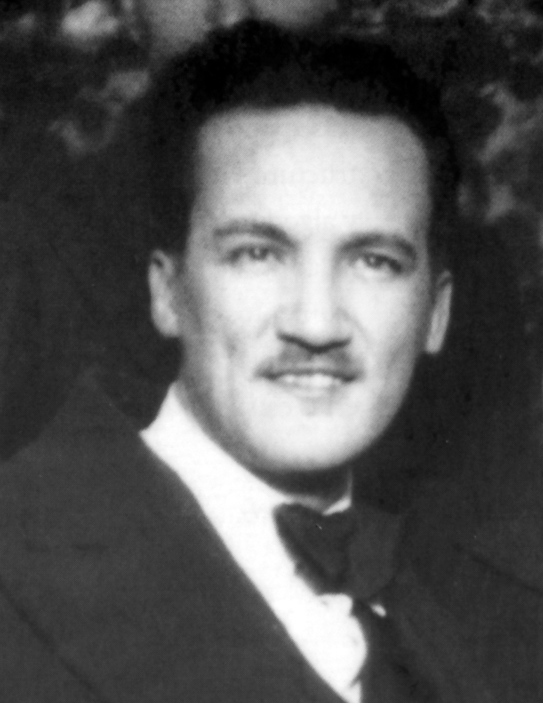

CSS ANIMATION
MANUEL SEOANE CORRALES
SEOANE COMPUTACIÓN E INFORMATICA
Manuel Seoane Corrales (Chorrillos, 1 de noviembre de 1900 – Washington D. C., 10 de septiembre de 1963) fue un abogado, periodista y político peruano. Es reconocido como uno de los miembros fundadores del Partido Aprista Peruano.
Después de Víctor Raúl Haya de la Torre, fue el líder aprista que alcanzó mayor popularidad dentro del movimiento. Por su carácter y cercanía con la gente, fue apodado “El Cachorro”.
Fue además fundador y primer director del periódico La Tribuna, órgano oficial de prensa de su partido. Dentro del APRA, desempeñó importantes cargos, entre ellos la Secretaría General durante el período de 1940 a 1948.
Al igual que muchos de sus compañeros apristas, sufrió persecuciones políticas y vivió periodos de destierro.
En el ámbito electoral, fue candidato a la primera vicepresidencia de la República del Perú en la plancha presidencial encabezada por Haya de la Torre en las elecciones generales de 1962, las cuales posteriormente fueron anuladas.

VOLVER